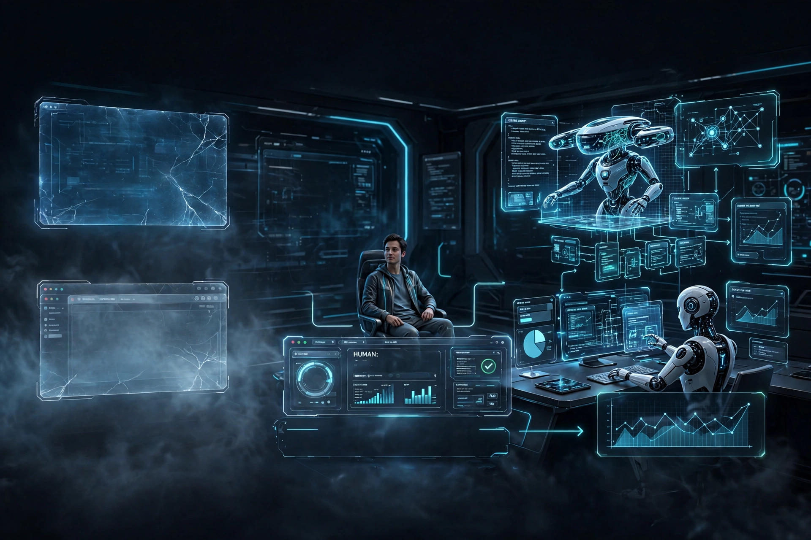

AI and agents
How autonomous systems change who operates software, and what humans stay accountable for.
Browse the articlesI am Mohamed Ben Achour. I write and think about artificial intelligence, software, cybersecurity, energy, and healthcare technology, and about the point where they meet: complex systems, the people who operate them, and the people accountable for them.

The work spans industries, but the questions repeat: how systems are built, how they fail, who operates them, and who answers for the outcome.
How autonomous systems change who operates software, and what humans stay accountable for.
Browse the articlesHow teams build, ship, and run software as the tools and the organizations around them change.
Browse the articlesSecurity as an engineering discipline: systematic discovery, validation, and evidence over noise.
Browse the articlesForecasting, markets, and the data systems that keep the grid balanced.
Browse the articlesInteroperability, health data, and applied AI in clinical systems.
Browse the articlesAutomation, autonomy, and the economics of running platforms at scale.
Browse the articlesWriting from my WordPress site, mohamedbenachour.net, now hosted here in full. The six most recent articles are below; the full archive has all 29.
The most important interface in software is gaining a new operator. For decades the only operator was a human being, and the IDE and the browser were built for that operator alone. They now have a second one, the…
Read the articleI want to start with what actually happened, because the headline and the finding are not the same thing. In April, Anthropic gave a handful of organizations early access to Mythos Preview under Project Glasswing.…
Read the articleThe Watched Pot You type /goal implement the payment retry logic across the billing service and hit enter. For the next four minutes, you watch. The terminal scrolls. Tool calls fire. Files change. You read every…
Read the articleNote: AI tools were used to assist in the drafting and editing parts of this article. All content has been reviewed, edited, before publishing. At its heart, Morin’s theory is a rejection of the “simplifying thought”…
Read the articleOne of the most heated debates in the software engineering world today centers around Vibe Coding. Introduced by Andrej Karpathy in February 2025, vibe coding is a conversational programming style where large…
Read the articleIn the past decade, the field of IT operations has seen a revolution in automated systems. The focus has been on Infrastructure as Code (IaC), configuration management, and scripting. These approaches have brought…
Read the article